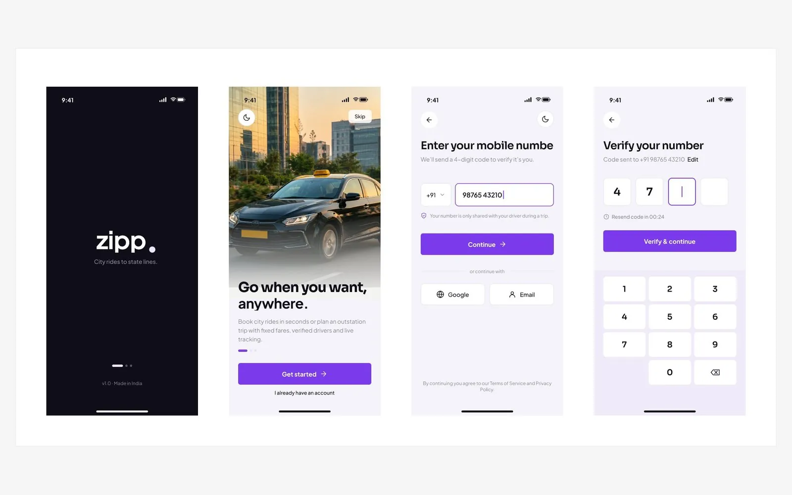

Mobile App Onboarding UX: How to Turn First-Time Users Into Regulars
The first two minutes decide whether people keep your app. Here’s how I design onboarding that gets users to value fast.

People download apps with high hopes and delete them just as quickly. The first session is your one chance to show value. Good onboarding isn’t a carousel of welcome slides; it’s the shortest path from “installed” to “this is useful”.
1. Define the “aha” moment
Every app has a moment when users get it: the first ride booked, the first budget created, the first workout finished. Design onboarding backwards from that moment and remove everything that doesn’t help users reach it.
Write the moment down as a single sentence, such as “a new user books their first ride in under two minutes”. That sentence becomes the yardstick for every onboarding decision: does this screen help reach it faster, or slow it down?
2. Let people try before they sign up
Asking for an account before showing anything is a big ask. Where possible, let users explore first and create an account when they want to save or act. When you do need sign-up, offer one-tap options and ask only for what you need right now.

- Offer Apple and Google sign-in alongside email
- Ask for a name and email only; collect the rest later
- Explain why you need a phone number if you ask for one
- Never make users re-enter information you already have
3. Ask for permissions in context
Asking for location, notifications and contacts on the first screen leads to “Don’t allow”. Ask at the moment the permission makes sense, with a short explanation of the benefit. Apple’s Human Interface Guidelines on onboarding cover this well.
4. Personalise the first screen
Two or three quick questions (goals, experience level, interests) can turn a generic home screen into one that feels made for the user. Keep it skippable and show how the answers are used.
Personalisation also gives users a reason to come back. If the app remembers their goal and shows progress towards it, the second session feels like a continuation rather than a fresh start.
5. Make empty states do the teaching
Instead of a tutorial users swipe past, put guidance where it’s needed. An empty goals screen can explain what goals are and offer a one-tap template to create the first one.
6. Show progress
If setup takes several steps, show where users are and how much is left. Celebrate small wins, like a first saved item or completed profile, so progress feels rewarding rather than like paperwork.
7. Measure and iterate
Track where new users drop off: sign-up, permissions, first action. Then test one change at a time. Small onboarding fixes often improve retention more than new features.
Pair the numbers with a few short usability tests. Watching five new users try your onboarding usually reveals the biggest problems in an afternoon, and the fixes are often small copy or layout changes.
Onboarding mistakes I see most often
- Five welcome slides that everyone skips
- Asking for every permission on the first screen
- Long sign-up forms before any value is shown
- Empty home screens with no guidance
- No way to skip or come back to setup later
Each of these adds friction at the moment users are least committed. Removing even one or two often makes the first session feel noticeably smoother.
Need help with your app’s first impression?
I design iOS and Android apps with onboarding built in from the start, from ride booking to personal finance. If your users sign up and disappear, let’s look at your first-run experience together.
Send me your screens and I’ll show you where users drop off and what to fix first.
Quick answers
What is mobile app onboarding?
Onboarding is the first-run experience that helps new users understand an app’s value, set it up and complete their first meaningful action.
How long should app onboarding be?
As short as possible. Aim to get users to their first valuable action within a minute or two and teach the rest in context.